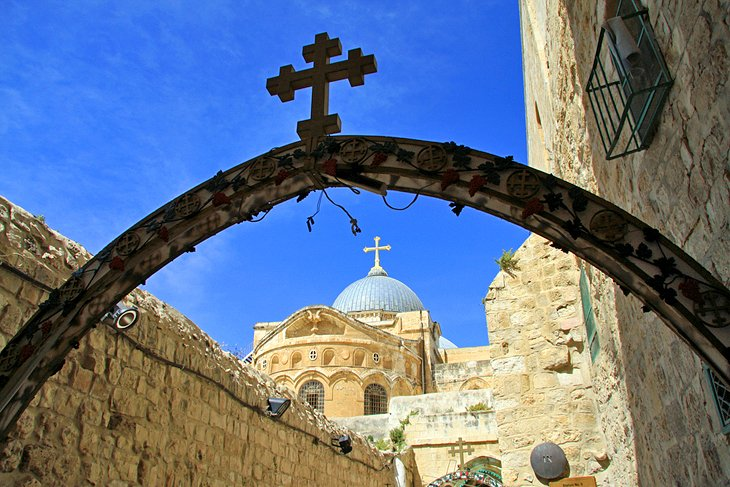
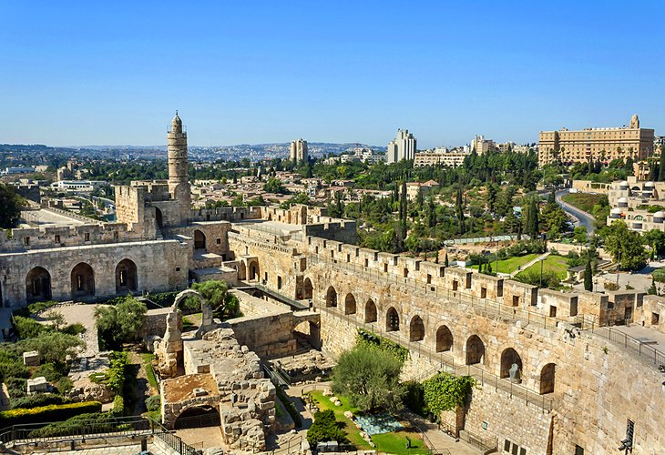
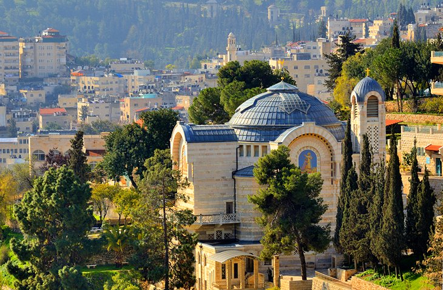
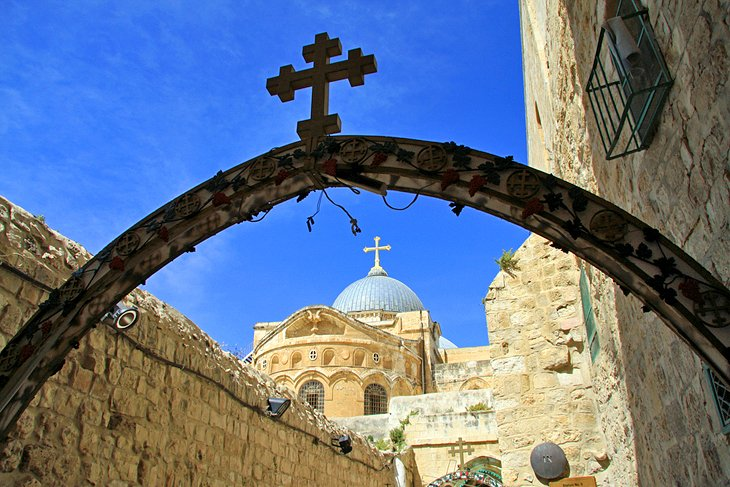
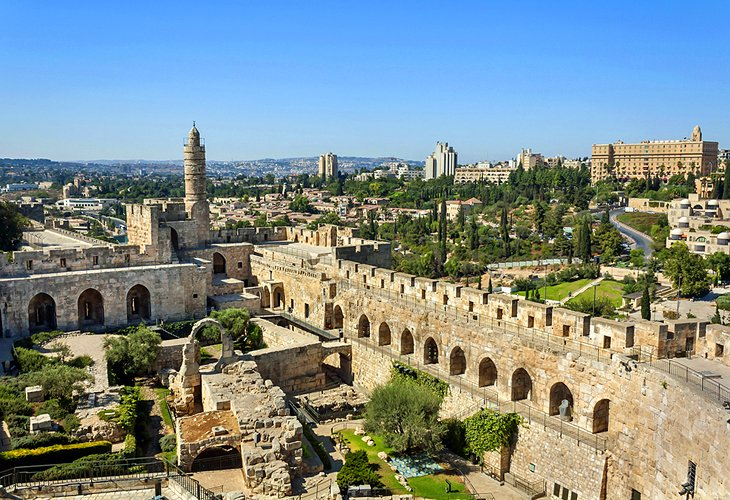
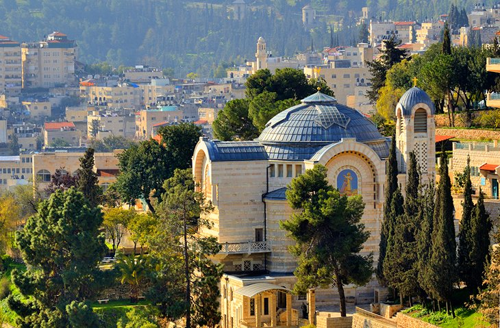

Jerusaleum Trip:-

 





It is a 6 days trip.
Starting at : ₹ 1,19,999
Stay at: King David Hotel
Places we visit:
1. Haram Al-Sharif (Temple Mount),
2. Western Wall and Jewish Quarter,
3. Church of the Holy Sepulchre,
4. Armenian Quarter,
5. Follow the Route of the Via Dolorosa,
6. Explore the Citadel (Tower of David) and Surrounds,
7. Christian Quarter,
8. Mount of Olives,
9. Mount Zion,
10. East Jerusalem,
NOTE:-All passengers should be vaccinated.